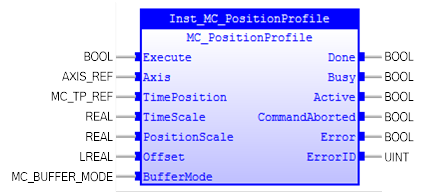
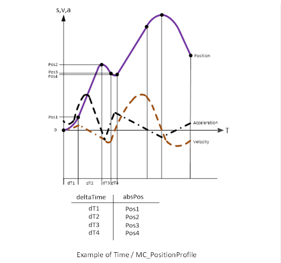
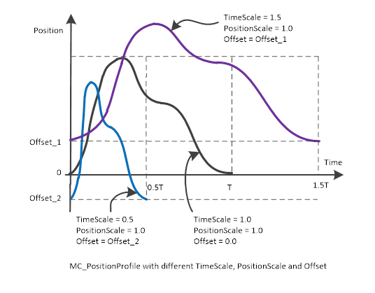
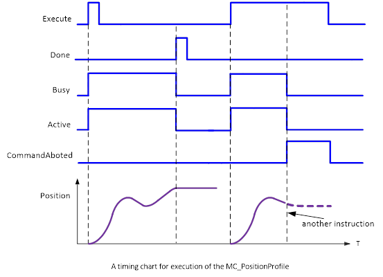

MC_PositionProfile
Commands a time-position locked motion profile.

Description:
MC_PositionProfile commands a time-position locked motion
profile. This functionality does not mean it runs one profile repeatedly. It
can switch between different profiles.

‘TimeScale’ is used as a factor to adjust delta time of the
position profile.
‘PositionScale’ is used as a factor to adjust the position
of the position profile.
‘Offset’ is used to all position points offset for the
position profile.
The following diagram shows the effect with different values
of ‘TimeScale’, ‘PositionScale’ and ‘Offset’:

A timing diagram of MC_PositionProfile execution is shown
below.

’Busy’ and ‘Active’ change to TRUE when ‘Execute’
changes to TRUE. It is not buffered.
‘Done’ changes to TRUE when position is reached, and
positioning is completed.
If another instruction aborts this instruction,
‘CommandAborted’ changes to TRUE and ‘Busy’ and ‘Active’ change to FALSE.
Make sure the input and output parameters are of data type
indicated in the table below.
MC_TP_REF is defined as below:
The content of a ‘Time / Position’ pair is expressed in ‘Delta
Time / Pos’, where ‘Delta’ is the difference in time between two successive
points.
|
STRUCT
TableStart : UDINT;
NumberOfPairs : UDINT;
END_STRUCT
|
As an alternative to this FB, MC_CamIn coupled to a virtual
master can be used.
Inputs/Outputs:
|
Name
|
Data Type
|
Description
|
|
INPUTS
|
|
Execute
|
BOOL
|
Start the motion at the rising edge
|
|
Axis
|
AXIS_REF
|
Reference to the axis
|
|
TimePosition
|
MC_TP_REF
|
Reference to Time/Position
|
|
TimeScale
|
REAL
|
Overall time scaling factor of the
profile
|
|
PositionScale
|
REAL
|
Overall position scaling factor
|
|
Offset
|
LREAL
|
Overall offset for profile [u]
|
|
BufferMode
|
MC_BUFFER_MODE
|
Enumerated
type (1-of-6values):
0:
mcAborting
1:
mcBuffered
2:
mcBlendingLow
3:
mcBlendingPrevious
4:
mcBlendingNext
5: mcBlendingHigh
|
|
OUTPUTS
|
|
Done
|
BOOL
|
Profile
completed
|
|
Busy
|
BOOL
|
The
FB is not finished and new output value is to be expected.
|
|
Active
|
BOOL
|
Indicates
that the FB has control on the axis
|
|
CommandAborted
|
BOOL
|
‘Command’
is aborted by another command
|
|
Error
|
BOOL
|
Signals
that an error has occurred within the Function Block
|
|
ErrorID
|
UINT
|
Error
identification
|
Examples:
Example 1:
|
 Example
Example
|
|
(* Example
for MC_PositionProfile *)
inst_PositionProfile( Execute := bExecute
(*BOOL*)
,
Axis
:= Axis0Ref
(*AXIS_REF*)
,
TimePosition
:= TimePositionTable
(*MC_TP_REF*)
,
TimeScale
:= rTimeScale
(*REAL*)
,
PositionScale
:= rPosScale
(*REAL*)
,
Offset
:= lrOffset
(*LREAL*)
,
BufferMode
:= mcBufferMode
(*MC_BUFFER_MODE*)
);
bDone :=
inst_PositionProfile.Done;
bBusy := inst_PositionProfile.Busy;
bCommAborted := inst_PositionProfile.CommandAborted;
bError := inst_PositionProfile.Error;
ErrorId := inst_PositionProfile.ErrorID;
|
See also: